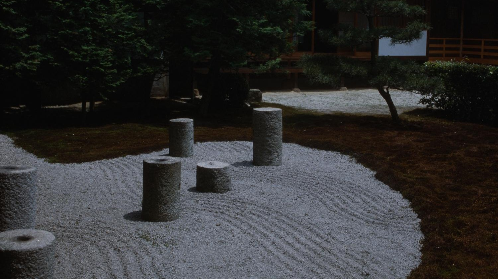
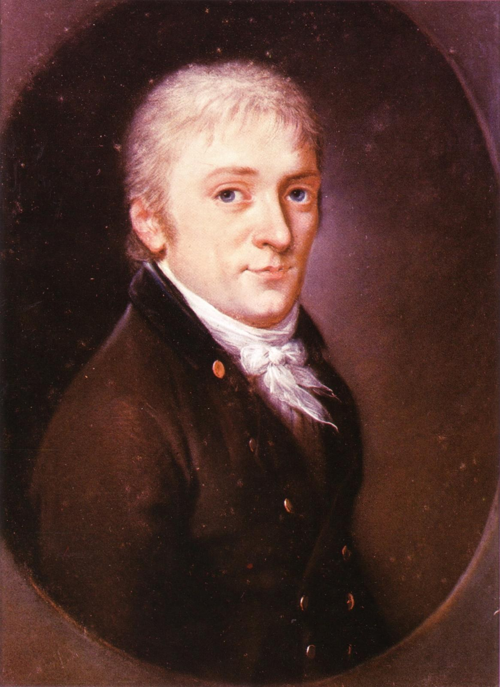
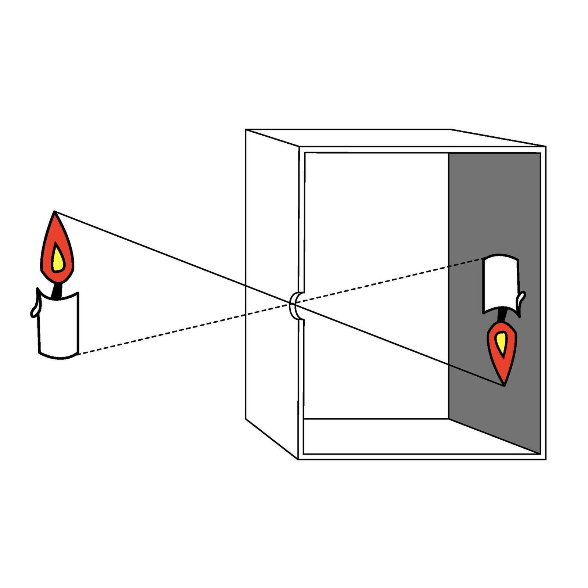
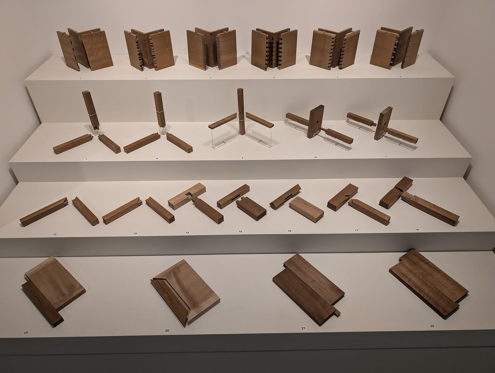

第17回
掃いた砂の線の上に、石の柱が立っている。
Sherwin John Carlquist（1982年、東福寺とされる。DPLA 経由）／CC BY 4.0／Wikimedia Commons（横長に切り出した）
「方程式をいくつか同時に満たす値を探す」問題を、係数だけの表（行列）に移して、機械的に解く。解が1つか、無数にあるか、1つもないかをランクという1つの数で見分け、その裏で「何が潰れて（核）、何が届くか（像）」が決まっていることまでを、記号を省かずに1行ずつ追う。
第1回から続く約束どおり、新しい記号は緑色の枠（記号）で「①読み方 ②日本語での意味 ③省略していない書き方 ④どこで出会うか」を書く。この回は「文の連立方程式」を「$A\boldsymbol x=\boldsymbol b$」まで縮める省略と、「行列の変形」を「$\sim$」で結ぶ省略が中心なので、1.2 の省略の段階で S0 から S3 まで1段ずつ並べ、何を省いたかと、省いても誤解が起きない理由を書く。
高校で習った「文字を消して解く」やり方も、仮定せずに一度は書く（覚えている人は飛ばしてよい）。すべての手順は数値で一度手を動かしてから文字の式に進む。式変形は1行に1操作だけ進め、操作の名前を右（または下）に書く。
なお、行列式（第18回）、内積・直交（第19回）、固有値（第20回）、LU分解と数値計算上の工夫（第50回）は、この回では予告だけにする。
最初に、この回で新しく説明する記号と、前の回で説明済みの記号を分けて並べる。右の列の「→」で説明のある場所へ飛べる。
| 記号 | 読み方 | ざっくりした意味 | 説明 |
|---|---|---|---|
| $A\boldsymbol x=\boldsymbol b$（連立一次方程式） | エー・エックス・イコール・ビー | 連立方程式を、係数の表 $A$・未知の並び $\boldsymbol x$・右辺の並び $\boldsymbol b$ で1行に書いたもの | →1.2 |
| $[A\mid\boldsymbol b]$（拡大係数行列） | エー・たてせん・ビー | $A$ の右に $\boldsymbol b$ を1列足した表。縦線は「ここまでが左辺、ここからが右辺」の印 | →1.2 |
| $R_i\leftrightarrow R_j$、$R_i\leftarrow cR_i$、$R_i\leftarrow R_i+cR_j$（行基本変形） | アール・アイ・こうかん・アール・ジェイ ／ … | 式（行）の入れ替え／0でない数倍／別の式の定数倍を足す | →2.1 |
| $A\sim B$（行同値） | エー・ぎょうどうち・ビー | 基本変形を何回かして $A$ から $B$ に行ける | →2.1 |
| 主成分（ピボット）、行階段形、簡約行階段形 | しゅせいぶん、ぎょうかいだんけい、かんやくぎょうかいだんけい | 各行の最初の0でない成分／階段の形に並んだ表／さらに主成分を1にし、その列のほかを0にした形 | →2.3、→2.3 |
| 自由変数 | じゆうへんすう | 掃き出したあと、主成分のない列に対応する未知数。好きな値にしてよい | →3.3 |
| $\operatorname{rank}A$（ランク、階数） | ランク・エー | 簡約行階段形にしたときの、主成分の個数 | →4.1 |
| $\ker A$（核）、$\dim\ker A$（零度） | カーネル・エー、ヌリティ | $A\boldsymbol x=\boldsymbol 0$ の解全体。その次元 | →5.1、→5.4 |
| $\operatorname{im}A$（像） | イメージ・エー | $A\boldsymbol x$ の形で書ける $\boldsymbol b$ 全体（$A$ の列の張る空間） | →5.2 |
| $\boldsymbol p$（特解） | とっかい | $A\boldsymbol x=\boldsymbol b$ の解のうち、どれでもよいから1つ選んだもの | →5.5 |
| $[A\mid I]$（逆行列の掃き出し） | エー・たてせん・アイ | $A$ の右に単位行列を並べた表 | →6.1 |
| 記号 | 意味 | 初出 |
|---|---|---|
| $=$、$:=$ | 等しい／左の名前を右の式で決める | 第1回 2.1、第1回 2.2 |
| $\in$、$\{\ \mid\ \}$（集合の内包表記）、$\mathbb R$ | 要素である／条件で集合を作る／実数全体 | 第2回、第2回、第2回 |
| $\Rightarrow$、$\Leftrightarrow$、$\forall$、$\exists$ | ならば／同値／すべての／存在する | 第2回、第2回、第2回、第2回 |
| $f\colon A\to B$、$f^{-1}(\cdot)$（逆像） | 写像／逆像 | 第3回、第3回 |
| $\displaystyle\sum$、$\delta_{ij}$ | 総和／クロネッカーのデルタ | 第4回、第4回 |
| 太字 $\boldsymbol x$（ベクトル）、成分、$\boldsymbol 0$ | 数の組／その中の数／全成分が0 | 第5回、第5回、第5回 |
| $A\in\mathbb R^{m\times n}$、$A_{ij}$、$I$ | $m$ 行 $n$ 列の行列／$i$ 行 $j$ 列の成分／単位行列 | 第5回、第5回、第5回 |
| 一次結合、$\operatorname{span}$、一次独立、基底、$\dim$ | ベクトルの定数倍の和／張る空間／冗長がない／座標軸の役目をする組／基底の本数 | 第15回、第15回、第15回、第15回、第15回 |
| 部分空間 | 和とスカラー倍で閉じた集まり | 第15回 |
| $A\boldsymbol x$（行列とベクトルの積）、線形写像、$AB$、$A^{-1}$ | 列の一次結合／写像／写像の合成／逆の写像 | 第16回、第16回、第16回、第16回 |
「りんご1個とみかん1個で3円、りんご1個とみかん1個の差が1円」のように、未知の数が複数あり、条件が複数ある問題は、技術の現場に山ほどある（回路の電流、つり合いの力、データへの直線あてはめ）。条件を式にすると、こうなる。
$$ \begin{cases} 1\cdot x+1\cdot y=3\\ 1\cdot x+(-1)\cdot y=1 \end{cases} $$
この2本を同時に満たす $(x,y)$ を探す。これが連立一次方程式である。「一次」は、未知数 $x,y$ が「定数倍して足す」形でしか現れない（$x^2$ や $xy$ が出てこない）という意味。
高校のやり方（復習。覚えている人は飛ばしてよい）：2本の式を足す。
① $(1\cdot x+1\cdot y)+(1\cdot x+(-1)\cdot y)=3+1$。
② $2x+0\cdot y=4$、つまり $2x=4$。
③ $x=2$。
④ 第1式に戻す：$1\cdot2+1\cdot y=3$、よって $y=1$。
⑤ 確かめ：第1式 $2+1=3$ ✓。第2式 $2-1=1$ ✓。
図1.1 は、この2本の式を平面の2本の直線として描いたものである。
ここで大事なのは、解く手順を支えているのは「文字」ではなく「係数」だけ、ということである。上の①〜④で動かしたのは $1,1,3$ と $1,-1,1$ という数だけで、$x,y$ は「どの列の数か」を示す札にすぎない。次の節で、この事実をそのまま省略に使う。
省略形 $A\boldsymbol x=\boldsymbol b$ を使う前に、何を省いたかを1段ずつ戻せるようにしておく。
| 段 | 書き方（例：1.1 の連立方程式） | この段で省いたもの | 省いても誤解が起きない理由 |
|---|---|---|---|
| S0 | $1\cdot x+1\cdot y=3$ かつ $1\cdot x+(-1)\cdot y=1$（文のまま） | （なし） | — |
| S1 | $x+y=3$、$x-y=1$ | 係数 $1$ と掛け算の「$\cdot$」、「$+(-1)$」を「$-$」に | $1\cdot x=x$、$a+(-b)=a-b$ は計算の規則で、値は変わらない |
| S2 | $\left[\begin{array}{cc|c}1&1&3\\1&-1&1\end{array}\right]$（拡大係数行列） | 文字 $x,y$、「$+$」「$=$」、「かつ」 | 各数の位置が札の役目をする（1列目は $x$ の係数、2列目は $y$ の係数、縦線の右は右辺）。位置さえ守れば、文字を書かなくても元の式に戻せる |
| S3 | $A\boldsymbol x=\boldsymbol b$、ただし $A=\begin{pmatrix}1&1\\1&-1\end{pmatrix}$、$\boldsymbol x=\begin{pmatrix}x\\y\end{pmatrix}$、$\boldsymbol b=\begin{pmatrix}3\\1\end{pmatrix}$ | 表を $A$（係数）・$\boldsymbol x$（未知）・$\boldsymbol b$（右辺）の3つの名前にまとめ、積の記号を省いた | $A\boldsymbol x$ の中身（各行の「係数×未知数」の和）は第16回の行列とベクトルの積で決まっている。そこへ戻れば S0 まで戻れる |
S3 の落とし穴：$A\boldsymbol x$ は「$A$ と $\boldsymbol x$ の掛け算」ではなく、「$A$ の列を $\boldsymbol x$ の成分で重みづけして足す」という約束の記号である（1.3）。以後この箱にリンクして使う。
図1.2 は、この4段を並べて、各段で何が消えたかを色で示した。
①読み方：「エー・エックス・イコール・ビー」。$A$ を係数行列、$\boldsymbol x$ を未知ベクトル、$\boldsymbol b$ を定数項ベクトル（右辺）と呼ぶ。
②日本語での意味：「$A$ の各行について、その行の係数と未知数を掛けて足した値が、右辺の対応する値に等しい」という $m$ 本の条件を、まとめて1行で言ったもの。
③省略していない書き方：$A\in\mathbb R^{m\times n}$（第5回）、$\boldsymbol x\in\mathbb R^n$、$\boldsymbol b\in\mathbb R^m$ のとき、$A\boldsymbol x=\boldsymbol b$ は $$ \sum_{j=1}^{n}A_{ij}x_j=b_i\qquad(i=1,2,\dots,m) $$ の $m$ 本の式を意味する（$\sum$ は第4回、$A_{ij}$ は第5回）。展開すると $A_{i1}x_1+A_{i2}x_2+\dots+A_{in}x_n=b_i$。
④どこで出会うか：回路方程式、力のつり合い、最小二乗法の正規方程式（第47回）、有限要素法・差分法（第50回）、固有値問題 $(A-\lambda I)\boldsymbol v=\boldsymbol 0$（第20回）。
最小の具体例：1.1 の連立方程式で $m=2,n=2$。$i=1$：$A_{11}x_1+A_{12}x_2=1\cdot x_1+1\cdot x_2=3$。$i=2$：$A_{21}x_1+A_{22}x_2=1\cdot x_1+(-1)\cdot x_2=1$。ここでは $x_1=x$、$x_2=y$ と読んでいる。
①読み方：「エー・たてせん・ビー」。「かくだい・けいすう・ぎょうれつ」。
②日本語での意味：係数行列 $A$ の右側に、右辺 $\boldsymbol b$ を1列つけ足した表。縦線は「ここまでが左辺の係数、これより右が右辺」という目印で、計算には関わらない。
③省略していない書き方：$A\in\mathbb R^{m\times n}$、$\boldsymbol b\in\mathbb R^m$ のとき、$[A\mid\boldsymbol b]\in\mathbb R^{m\times(n+1)}$：第 $j$ 列（$1\le j\le n$）が $A$ の第 $j$ 列、第 $n+1$ 列が $\boldsymbol b$ の表。縦線は書かずに $[A\ \boldsymbol b]$ とも書く（ここでは縦線を残す）。
④どこで出会うか：掃き出し法（第2節）、解の存在判定（4.2）。拡大係数行列のランクと係数行列のランクの比較（4.2）。
最小の具体例：$A=\begin{pmatrix}1&1\\1&-1\end{pmatrix}$、$\boldsymbol b=\begin{pmatrix}3\\1\end{pmatrix}$ なら、$[A\mid\boldsymbol b]=\left[\begin{array}{cc|c}1&1&3\\1&-1&1\end{array}\right]$。$2\times3$ の表である。
縦線なしで $(A\ \boldsymbol b)$ または $(A,\boldsymbol b)$ と書く本、$[A\mid\boldsymbol b]$ と書く本、$(A\,|\,\boldsymbol b)$ と丸括弧で書く本がある。意味は同じ（本書は角括弧＋縦線）。縦線は、読む人のための印である。
S3 の落とし穴で言った「列を重みづけして足す」を、1.1 の例で確かめる。$A$ の列を $\boldsymbol a_1=\begin{pmatrix}1\\1\end{pmatrix}$、$\boldsymbol a_2=\begin{pmatrix}1\\-1\end{pmatrix}$ とおく。
① $A\boldsymbol x=x\,\boldsymbol a_1+y\,\boldsymbol a_2$。
② 解 $(x,y)=(2,1)$ を入れる：$2\begin{pmatrix}1\\1\end{pmatrix}+1\begin{pmatrix}1\\-1\end{pmatrix}=\begin{pmatrix}2+1\\2-1\end{pmatrix}=\begin{pmatrix}3\\1\end{pmatrix}=\boldsymbol b$ ✓。
したがって「$A\boldsymbol x=\boldsymbol b$ を解く」とは、「$\boldsymbol b$ を $A$ の列の一次結合で書くとき、その重み $x_1,\dots,x_n$ を求めよ」という問いと同じである（第15回の一次結合、第16回の $A\boldsymbol x$）。図1.3 を見る。
この読み方が、後半（ランク・核・像）の主役になる。解があるとは「$\boldsymbol b$ が $A$ の列の張る空間（第15回の span）に入っている」ことであり、解が1つだけとは「その重みの組が1通りしかない」ことである。
「$A\boldsymbol x=\boldsymbol b$ だから、$\boldsymbol x=\boldsymbol b/A$ と割ればよい」は誤り。行列に「割る」は定義されていない（行列には逆行列 $A^{-1}$ があるときだけ $\boldsymbol x=A^{-1}\boldsymbol b$ と書け、しかも左から掛ける。6節）。$A$ が正方行列でない（式の数と未知数の数が違う）ときは、逆行列そのものが存在しないので、掃き出し法を使う。
PHOTO 1｜現実

連立方程式の消去法に名を残す、ガウスの1803年の肖像である。
ヨハン・クリスティアン・アウグスト・シュヴァルツ作のカール・フリードリヒ・ガウスのパステル画（1803年）／Public domain／Wikimedia Commons（縮小した）
1.1 で足し算をして $y$ を消したように、解は変えずに、式の見た目だけを単純にする操作を、表の言葉（行＝式1本）で整理する。使ってよい操作は次の3つだけである。
①読み方：$R_i$ は「アール・アイ」＝「第 $i$ 行」（Row の頭文字）。(i) $R_i\leftrightarrow R_j$「第 $i$ 行と第 $j$ 行を入れ替える」。(ii) $R_i\leftarrow cR_i$「第 $i$ 行を $c$ 倍したものを、新しい第 $i$ 行にする」（ただし $c\neq0$）。(iii) $R_i\leftarrow R_i+cR_j$「第 $i$ 行に、第 $j$ 行の $c$ 倍を足したものを、新しい第 $i$ 行にする」（ただし $i\neq j$）。
②日本語での意味：(i) 方程式の並べる順序を変える。(ii) ある方程式の両辺を0でない数倍する。(iii) ある方程式に、別の方程式の定数倍を辺ごとに足す。
③省略していない書き方：「$\leftarrow$」は代入の矢印で、「右辺で計算した結果を、左辺の行に新しく書き直す」の意味（第1回の $:=$ に近いが、行は書き直されて元の中身が消える点が違う）。たとえば $R_2\leftarrow R_2-3R_1$ は「新しい第2行 $:=$ 古い第2行 $-3\times$ 古い第1行」で、$-3$ 倍は $c=-3$ の場合。成分で書けば、すべての列 $k$ について（新しい第2行の第 $k$ 成分）$:=$（古い第2行の第 $k$ 成分）$-3\times$（古い第1行の第 $k$ 成分）。
④どこで出会うか：掃き出し法、ランクの計算、逆行列の計算、行列式の計算（第18回）、LU分解（第50回）。
(iii) を「$R_i+cR_j\to R_i$」と右向きの矢印で書く本、「$cR_j+R_i$」と書く本、文章で「第 $i$ 行に第 $j$ 行の $c$ 倍を加える」と書く本がある（行を $\rho$ などの別の文字で呼ぶ本もある）。どの行が書き換えられ、どの行はそのままかだけを読み取ること。本書の「$\leftarrow$」は、左辺の行が書き換えられる側である。
図2.1 は、3つの操作を、例の拡大係数行列に1回ずつ施したものである。
①読み方：「エー・ぎょうどうち・ビー」（記号 $\sim$ は「ティルダ」）。
②日本語での意味：「行列 $A$ に行基本変形を有限回施して、行列 $B$ にできる」。
③省略していない書き方：$A\sim B$ とは、行基本変形の列 $\mathcal O_1,\mathcal O_2,\dots,\mathcal O_k$ があって、$A$ に $\mathcal O_1,\dots,\mathcal O_k$ を順に施すと $B$ になる、ということ。1回ごとの変形は「$\to$」（または、各変形の名前を矢印の上に書いた形）で書くことが多く、$\sim$ はその結果だけを言う省略形である。どんな変形をしたかは $\sim$ には書かれていない。
④どこで出会うか：掃き出し法の途中経過の書き方、ランクの定義（4.1）、$\sim$ を別の意味（相似など）に使う本もあるので、定義を確かめること。
$A\sim B$ のとき、行列 $A$ と $B$ は同じ行列ではない（成分が違う）。同じなのは「連立方程式として見たときの解全体」である（定理2.1）。$A=B$ と書くと「成分がすべて等しい」と読まれるので、変形の途中は必ず $=$ ではなく $\sim$ か $\to$ を使う。
拡大係数行列 $[A\mid\boldsymbol b]$ に行基本変形を1回施して $[A'\mid\boldsymbol b']$ を得たとき、連立方程式 $A\boldsymbol x=\boldsymbol b$ の解の全体と $A'\boldsymbol x=\boldsymbol b'$ の解の全体は一致する。したがって、有限回施しても一致する（$[A\mid\boldsymbol b]\sim[A'\mid\boldsymbol b']$ なら解全体は同じ）。
解全体が一致する、とは「$\boldsymbol x$ が $A\boldsymbol x=\boldsymbol b$ を満たすなら $A'\boldsymbol x=\boldsymbol b'$ も満たし、逆も成り立つ」こと。これを3つの操作について示す。
(i) 入れ替え。式の順序を変えても、「すべての式が成り立つ」という条件は変わらない。
(ii) $R_i\leftarrow cR_i$（$c\neq0$）。第 $i$ 式を $\sum_jA_{ij}x_j=b_i$ とする。両辺を $c$ 倍した式は $\sum_jcA_{ij}x_j=cb_i$。① 元の式が成り立てば、等しいものを $c$ 倍しても等しいので新しい式も成り立つ。② 新しい式が成り立てば、両辺を $c^{-1}$ 倍して元の式が成り立つ。
(iii) $R_i\leftarrow R_i+cR_j$（$i\neq j$）。新しい第 $i$ 式は $\sum_k(A_{ik}+cA_{jk})x_k=b_i+cb_j$。① 元の第 $i$ 式と第 $j$ 式が成り立つなら、第 $i$ 式に第 $j$ 式の $c$ 倍を辺ごとに足した等式も成り立つ。② 逆に新しい第 $i$ 式と（変えていない）第 $j$ 式が成り立つなら、新しい第 $i$ 式から第 $j$ 式の $c$ 倍を辺ごとに引いて、元の第 $i$ 式が成り立つ。
どの操作にも逆戻りの操作（(i) は同じ入れ替え、(ii) は $c^{-1}$ 倍、(iii) は $-c$ 倍の加算）があるから、解全体は変わらない。□
図2.2 に、1.1 の連立方程式で、変形のたびに直線が動いても交点だけは動かない様子を描く。
1.1 では、2本の式から $y$ を消して「$2x=4$」という未知数が1つしかない式を作り、そこから解が読めた。これを一般化し、「下の行ほど、左側に0が多い」形を目標にする。
①読み方：「しゅせいぶん」「ピボット」（英語 pivot＝回転軸）。
②日本語での意味：行列のある行を左から見ていったときに、最初に出てくる0でない成分。零行（全成分が0の行）には主成分がない。
③省略していない書き方：第 $i$ 行の主成分とは、$A_{ik}\neq0$ となる最小の $k$ に対する $A_{ik}$（その位置を「主成分の位置」と呼ぶ）。「最小の $k$」で「左から最初」を言っている。
④どこで出会うか：掃き出し法、ランクの定義、LU分解（第50回、数値計算ではピボット選択という）。
①読み方：「ぎょうかいだんけい」、「かんやくぎょうかいだんけい」。英語ではそれぞれ row echelon form（REF）、reduced row echelon form（RREF）。
②日本語での意味：行階段形は、(a) 零行は一番下にまとめ、(b) 主成分の位置が、下の行ほど真に右にある形。簡約行階段形は、さらに (c) 各主成分は1で、(d) 主成分を含む列の、ほかの成分はすべて0である形。
③省略していない書き方：(b) は「第 $i$ 行と第 $i'$ 行がどちらも零行でなく $i\lt i'$ なら、第 $i$ 行の主成分の位置 $k$ は第 $i'$ 行の主成分の位置 $k'$ より小さい（$k\lt k'$）」。
④どこで出会うか：掃き出し法のゴール、ランク、逆行列、基底の取り出し（第15回）。
図2.3 は「行階段形」の形を、$\blacksquare$（主成分）と $*$（0でもよい数）で描いたものである。
最小の具体例：次の行列を見よ。
$$ R=\begin{pmatrix}1&0&2&0\\0&1&-1&0\\0&0&0&1\\0&0&0&0\end{pmatrix} $$
① 第1行の主成分は1列目の $1$、第2行は2列目の $1$、第3行は4列目の $1$、第4行は零行で主成分なし。
② 主成分はすべて $1$。
③ 主成分の列（1, 2, 4列目）の他の成分は0（1列目は下が0、2列目は上下が0、4列目は上が0）。
したがって $R$ は簡約行階段形である。3列目の「$2,-1,0,0$」は主成分を含まない列なので、何でもよい。
(1)「行階段形は1通り」ではない：$\begin{pmatrix}1&2\\0&3\end{pmatrix}$ も $\begin{pmatrix}1&0\\0&1\end{pmatrix}$ も行階段形（前者は簡約でない）。簡約行階段形は、どんな行列からでも手順によらずただ1つに決まる（この事実は証明せずに使う。Hefferon の第1章 III 節に証明がある）。(2)「主成分の列がすべて1」ではない：主成分は1でも、主成分の列の残りが0であることが (d) である。
手順（掃き出し法、ガウスの消去法の仕上げをしたものはガウス・ジョルダン法）：左の列から順に、(1) その列で、主成分にしたい行を選び（必要なら入れ替え）、(2) 主成分を1にし（$c$ 倍）、(3) その列のほかの行をすべて0にする（別の行の倍を足す）、を繰り返す。
例：次の連立方程式を解く。解は $(x,y,z)=(1,2,3)$ になるはずだが、それは使わずに解く。
$$ \begin{cases} x+y+z=6\\ 2x+y-z=1\\ x-y+2z=5 \end{cases} \qquad [A\mid\boldsymbol b]=\left[\begin{array}{ccc|c}1&1&1&6\\2&1&-1&1\\1&-1&2&5\end{array}\right] $$
① $R_2\leftarrow R_2-2R_1$：第2行から第1行の2倍を引く。$(2,1,-1,1)-2(1,1,1,6)=(0,-1,-3,-11)$。
② $R_3\leftarrow R_3-R_1$：$(1,-1,2,5)-(1,1,1,6)=(0,-2,1,-1)$。
③ $R_2\leftarrow(-1)R_2$：$(0,1,3,11)$。
④ $R_1\leftarrow R_1-R_2$：$(1,1,1,6)-(0,1,3,11)=(1,0,-2,-5)$。
⑤ $R_3\leftarrow R_3+2R_2$：$(0,-2,1,-1)+2(0,1,3,11)=(0,0,7,21)$。
⑥ $R_3\leftarrow\frac17R_3$：$(0,0,1,3)$。
⑦ $R_1\leftarrow R_1+2R_3$：$(1,0,-2,-5)+2(0,0,1,3)=(1,0,0,1)$。
⑧ $R_2\leftarrow R_2-3R_3$：$(0,1,3,11)-3(0,0,1,3)=(0,1,0,2)$。
結果：$\left[\begin{array}{ccc|c}1&0&0&1\\0&1&0&2\\0&0&1&3\end{array}\right]$。これを文に戻す（S2→S0）と、$1\cdot x+0\cdot y+0\cdot z=1$、$0\cdot x+1\cdot y+0\cdot z=2$、$0\cdot x+0\cdot y+1\cdot z=3$。つまり $x=1$、$y=2$、$z=3$ である。
図2.4 に、行列の変化を①〜⑧の順で並べ、主成分を丸で囲んだ。
確かめ（元の式に代入）：第1式 $1+2+3=6$ ✓。第2式 $2\cdot1+2-3=1$ ✓。第3式 $1-2+2\cdot3=5$ ✓。定理2.1 により、変形後の解は元の連立方程式の解でもある。
(1) 操作の順序：「別の行の倍を足す」のとき、足される行（書き換わる行）と足す行（そのまま残る行）を取り違えると、情報が失われる。$R_2\leftarrow R_2-2R_1$ のあと、$R_1$ はそのまま残る。(2) $R_i\leftarrow cR_i$ で $c=0$：元に戻れず、定理2.1 が成り立たなくなる。(3) 1つの行で、複数の操作を暗算で一度にやるとミスが増える。1行に1操作で書く習慣をつける。
1.1 の連立方程式では解がちょうど1つだった。いつもそうとは限らない。2本の直線の位置関係は3通りある（図3.1）。
(a) 1点で交わる：$x+y=3$、$x-y=1$ → 解 $(2,1)$ の1つ。
(b) 平行で交わらない：$x+y=3$、$x+y=1$ → 同じ $x+y$ が $3$ にも $1$ にもなれないので、解は0個。
(c) 重なる：$x+y=3$、$2x+2y=6$ → 2本目は1本目の2倍で同じ直線。直線上のどの点も解だから、解は無数。
3元以上になると、図では見にくいが、解は0個・1個・無数のどれかという事情は変わらない（4.2 で証明する）。「ちょうど2個」はありえない。
(b) を掃き出す。$\left[\begin{array}{cc|c}1&1&3\\1&1&1\end{array}\right]$。
① $R_2\leftarrow R_2-R_1$：$(1,1,1)-(1,1,3)=(0,0,-2)$。
② $R_2\leftarrow(-\frac12)R_2$：$(0,0,1)$。
③ $R_1\leftarrow R_1-3R_2$：$(1,1,3)-3(0,0,1)=(1,1,0)$。
得られた表 $\left[\begin{array}{cc|c}1&1&0\\0&0&1\end{array}\right]$ の第2行を文に戻す（S2→S0）：$0\cdot x+0\cdot y=1$、つまり $0=1$。これはどんな $x,y$ でも成り立たない。定理2.1 により、元の連立方程式にも解はない。
この形「係数の部分が全部0で、右辺だけ0でない行」を矛盾の行と呼ぶ（記号ではなく、この教材で使う呼び名）。掃き出して簡約行階段形にしたとき、右辺の列（縦線の右）に主成分があれば、その行は矛盾の行である。図3.2 は、右辺の列に主成分があるかどうかで、解があるかないかが分かれる様子を並べたものである。
(c) を掃き出す。$\left[\begin{array}{cc|c}1&1&3\\2&2&6\end{array}\right]$。
① $R_2\leftarrow R_2-2R_1$：$(2,2,6)-2(1,1,3)=(0,0,0)$。
結果：$\left[\begin{array}{cc|c}1&1&3\\0&0&0\end{array}\right]$。第2行は $0=0$（恒等式）で、条件にならない。残る条件は $x+y=3$ の1本だけで、未知数は2つ。
①読み方：「じゆうへんすう」。英語 free variable。主成分のある列に対応する変数を「束縛変数」「基本変数」と呼ぶ本もある（本書では「主成分の変数」と呼ぶ）。
②日本語での意味：掃き出したあとの表で、主成分を含まない列に対応する未知数。ほかの条件から値が決まらないので、好きな値を入れてよい。主成分の変数の値は、自由変数の値から決まる。
③省略していない書き方：$A\in\mathbb R^{m\times n}$ を簡約行階段形にしたとき、主成分のある列の番号の集合を $P\subset\{1,\dots,n\}$ とする。$j\notin P$ である $x_j$ が自由変数。個数は $n-|P|$（$|P|$ は集合の要素の個数）。
④どこで出会うか：無数の解の書き方、核の基底（5.4）、第15回の基底の個数。
(c) では、主成分は1列目（$x$）だけで、2列目（$y$）には主成分がない。だから $y$ が自由変数。$y=s$（$s$ は任意の実数）とおく。「$s$」のような自由に動かす文字をパラメータ（媒介変数、第3回）と呼ぶ。
② $x+y=3$ に $y=s$ を入れる：$x=3-s$。
③ ベクトルで書く：$\begin{pmatrix}x\\y\end{pmatrix}=\begin{pmatrix}3-s\\s\end{pmatrix}=\begin{pmatrix}3\\0\end{pmatrix}+s\begin{pmatrix}-1\\1\end{pmatrix}$。
④ 確かめ：$s=0$ で $(3,0)$：$3+0=3$ ✓、$6=2\cdot3$ ✓。$s=1$ で $(2,1)$：$2+1=3$ ✓。$s=2$ で $(1,2)$：$1+2=3$ ✓。
③の形「ひとつの点（$\begin{pmatrix}3\\0\end{pmatrix}$）に、方向ベクトル（$\begin{pmatrix}-1\\1\end{pmatrix}$）の定数倍を足した形」は、第5回で見た直線のベクトル表示と同じで、図3.3 のように、$s$ を動かすと直線上の点が動く。
次の行列を使う（この回の後半でも使う）。
$$ A=\begin{pmatrix}1&2&3\\2&1&3\\1&1&2\end{pmatrix},\qquad \text{第3列}=\text{第1列}+\text{第2列}\ \ (3=1+2,\ 3=2+1,\ 2=1+1) $$
(1) $\boldsymbol b=\begin{pmatrix}6\\6\\4\end{pmatrix}$ のとき：$[A\mid\boldsymbol b]=\left[\begin{array}{ccc|c}1&2&3&6\\2&1&3&6\\1&1&2&4\end{array}\right]$。
① $R_2\leftarrow R_2-2R_1$：$(2,1,3,6)-2(1,2,3,6)=(0,-3,-3,-6)$。
② $R_3\leftarrow R_3-R_1$：$(1,1,2,4)-(1,2,3,6)=(0,-1,-1,-2)$。
③ $R_2\leftarrow(-\frac13)R_2$：$(0,1,1,2)$。
④ $R_3\leftarrow(-1)R_3$：$(0,1,1,2)$。
⑤ $R_1\leftarrow R_1-2R_2$：$(1,2,3,6)-2(0,1,1,2)=(1,0,1,2)$。
⑥ $R_3\leftarrow R_3-R_2$：$(0,1,1,2)-(0,1,1,2)=(0,0,0,0)$。
結果 $\left[\begin{array}{ccc|c}1&0&1&2\\0&1&1&2\\0&0&0&0\end{array}\right]$。主成分は1列目・2列目、3列目は主成分なし → $z$ が自由変数。$z=s$ とおく。
⑦ 第1行：$x+z=2$ より $x=2-s$。第2行：$y+z=2$ より $y=2-s$。
⑧ $\begin{pmatrix}x\\y\\z\end{pmatrix}=\begin{pmatrix}2\\2\\0\end{pmatrix}+s\begin{pmatrix}-1\\-1\\1\end{pmatrix}$。
⑨ 確かめ：$s=1$ で $(1,1,1)$。$A\begin{pmatrix}1\\1\\1\end{pmatrix}=\begin{pmatrix}1+2+3\\2+1+3\\1+1+2\end{pmatrix}=\begin{pmatrix}6\\6\\4\end{pmatrix}$ ✓。$s=0$ で $(2,2,0)$：$\begin{pmatrix}2+4\\4+2\\2+2\end{pmatrix}=\begin{pmatrix}6\\6\\4\end{pmatrix}$ ✓。
(2) $\boldsymbol b=\begin{pmatrix}6\\6\\5\end{pmatrix}$ のとき：第3行だけが違う。①〜⑥の操作を同じ順序で行うと、
① $(0,-3,-3,-6)$、② $R_3\leftarrow R_3-R_1$：$(1,1,2,5)-(1,2,3,6)=(0,-1,-1,-1)$、③ $R_2$：$(0,1,1,2)$、④ $R_3\leftarrow(-1)R_3$：$(0,1,1,1)$、⑤ $R_1\leftarrow R_1-2R_2$：$(1,0,1,2)$、⑥ $R_3\leftarrow R_3-R_2$：$(0,1,1,1)-(0,1,1,2)=(0,0,0,-1)$。
⑦ $R_3\leftarrow(-1)R_3$：$(0,0,0,1)$。
⑧ $R_1\leftarrow R_1-2R_3$：$(1,0,1,2)-2(0,0,0,1)=(1,0,1,0)$。 ⑨ $R_2\leftarrow R_2-2R_3$：$(0,1,1,2)-2(0,0,0,1)=(0,1,1,0)$。
結果 $\left[\begin{array}{ccc|c}1&0&1&0\\0&1&1&0\\0&0&0&1\end{array}\right]$。第3行は $0=1$（矛盾の行）→ 解なし。右辺の列に主成分がある。
(1) と (2) は、係数行列 $A$ が同じで右辺 $\boldsymbol b$ だけが違うのに、解の個数が無数／0個と別れた。何が違うのかは、4 と 5 で「$\boldsymbol b$ が $A$ の列の張る空間に入るか」として見直す。
3 の判定は、「主成分がいくつあるか」で決まっていた。この数に名前をつける。
①読み方：「ランク・エー」。日本語では「階数（かいすう）」。
②日本語での意味：行列 $A$ を行基本変形で簡約行階段形にしたとき、零でない行の数（＝主成分の個数）。
③省略していない書き方：$A\in\mathbb R^{m\times n}$ について、$A\sim R$（$R$ は簡約行階段形、行同値）としたとき、$\operatorname{rank}A:=(R\text{ の主成分の個数})$。簡約行階段形は変形の手順によらず一意に決まる（2.2 の注、証明なしで使う）ので、この数も手順によらない。$A$ のサイズより、$0\le\operatorname{rank}A\le\min(m,n)$（$\min$ は2数の小さいほう。主成分は1行に高々1つ、1列に高々1つだから）。
④どこで出会うか：解の個数の判定（4.2）、次元定理（5.4）、逆行列の存在（6節）、最小二乗法（第47回）、低ランク近似（第22回）。
図4.1 は、3×3 の3つの行列で、簡約行階段形と、数えたランクを並べたものである。
最小の具体例：3.4 の $A=\begin{pmatrix}1&2&3\\2&1&3\\1&1&2\end{pmatrix}$ は、3.4 の掃き出しで $\left[\begin{array}{ccc|c}1&0&1&2\\0&1&1&2\\0&0&0&0\end{array}\right]$ になった。縦線の左（$A$ の部分）の主成分は2つ → $\operatorname{rank}A=2$。式は3本あるのに、独立な条件は2本だけだった（第3行は他の2本から作れる）。
$A\in\mathbb R^{m\times n}$、$\boldsymbol b\in\mathbb R^m$ のとき、$A\boldsymbol x=\boldsymbol b$ について次が成り立つ。
特に、解の個数は 0、1、無数のいずれかで、「ちょうど2個」はありえない。
$[A\mid\boldsymbol b]$ に行基本変形を施して、簡約行階段形 $[R\mid\boldsymbol d]$ を得る。行基本変形は各列に独立に働く（行どうしの入れ替えや、行の定数倍の加算は、どの列にも同じように作用する）ので、左の $n$ 列だけを見れば、$A$ を簡約行階段形 $R$ にした結果になっている。したがって $\operatorname{rank}A=(R\text{ の主成分の数})$。
(1) $[R\mid\boldsymbol d]$ の主成分の数は、$R$ の主成分の数に、「$\boldsymbol d$ の列に主成分がある（あるとき1つ増える）」を足したもの。$\boldsymbol d$ の列に主成分があるのは、「$0\ 0\ \cdots\ 0\mid1$」の形の行（矛盾の行、3.2）ができたとき、かつそのときに限る。矛盾の行があれば $0=1$ で解なし。なければ解がある（主成分の変数を、自由変数の値から決まる式で書けるので）。よって解あり $\Leftrightarrow$ $\boldsymbol d$ の列に主成分なし $\Leftrightarrow$ $\operatorname{rank}[A\mid\boldsymbol b]=\operatorname{rank}A$。
(2) 解があるとき、自由変数は $n-\operatorname{rank}A$ 個。自由変数が0個（$\operatorname{rank}A=n$）なら、すべての変数が主成分の変数で、それぞれの値が $\boldsymbol d$ から決まるので解は1つ。自由変数が1個以上（$\operatorname{rank}A\lt n$）なら、その自由変数に実数の値（無数の選び方）を入れるたびに別の解が決まるので無数。□
数値で確かめる（3.4 の2つの場合）：(1) $A$ も $[A\mid\boldsymbol b]$ もランク2、$n=3$ なので、解は無数でパラメータは $3-2=1$ 個（3.4(1) の $s$）。(2) $\operatorname{rank}A=2$、$\operatorname{rank}[A\mid\boldsymbol b]=3$ なので解なし（3.4(2)）。1.1 の例（$\operatorname{rank}A=2=n$、拡大も2）は、解が1つ。
(1)「式の数 $m$ と未知数の数 $n$ が同じなら、解は1つ」は誤り（3.4 は $m=n=3$ なのに解が無数／0個）。決めるのは $m$ ではなくランク。(2)「$m\lt n$（式が足りない）なら解は無数」も誤り：解があるときに限る（矛盾の行があれば $m\lt n$ でも解なし）。たとえば $x+y+z=1$、$x+y+z=2$（$m=2,n=3$）は解なし。(3)「$m\gt n$（式が多すぎる）なら解なし」も誤り：式がダブっていれば解は残る（例：$x=1$、$2x=2$、$3x=3$）。
1.3 で、$A\boldsymbol x=\boldsymbol b$ は「$\boldsymbol b$ を $A$ の列の一次結合で書く」ことだった。ランクは、列の言葉でも同じ数になる。
$A\in\mathbb R^{m\times n}$ を簡約行階段形 $R$ にしたとき、$R$ の主成分のある列の番号を $j_1\lt j_2\lt\dots\lt j_r$（$r=\operatorname{rank}A$）とする。このとき、元の $A$ の第 $j_1,\dots,j_r$ 列は一次独立で、$A$ の他の列は、それらの一次結合で書ける。したがって $\operatorname{rank}A$ は「$A$ の列の中の、一次独立なものの最大個数」に等しい。
$A$ の列を $\boldsymbol a_1,\dots,\boldsymbol a_n$、$R$ の列を $\boldsymbol r_1,\dots,\boldsymbol r_n$ とする。「$c_1\boldsymbol a_1+\dots+c_n\boldsymbol a_n=\boldsymbol 0$」は、$A\boldsymbol c=\boldsymbol 0$（$\boldsymbol c=(c_1,\dots,c_n)$）と同じ式である（1.3）。定理2.1（右辺が $\boldsymbol 0$ の場合）により、$A\boldsymbol c=\boldsymbol 0$ と $R\boldsymbol c=\boldsymbol 0$ は解全体が等しい。つまり$A$ の列の間の関係式（一次結合が $\boldsymbol 0$ になる重み）と、$R$ の列の間の関係式は、まったく同じ。
$R$ の主成分の列 $\boldsymbol r_{j_1},\dots,\boldsymbol r_{j_r}$ は、単位ベクトル $\boldsymbol e_1,\dots,\boldsymbol e_r$（$\boldsymbol e_k$ は第 $k$ 成分だけ1の列ベクトル、第5回）になっている（簡約行階段形の (c)(d)）。これらの間の関係式は $\boldsymbol 0$ 重みしかない（一次独立）。ほかの列 $\boldsymbol r_j$ は、上から $r$ 行しか非零成分がなく、それは $\boldsymbol r_j=\sum_{k=1}^rR_{kj}\boldsymbol e_k=\sum_{k=1}^rR_{kj}\boldsymbol r_{j_k}$ と書ける（主成分の列の一次結合）。関係式が同じだから、$A$ でも $\boldsymbol a_{j_1},\dots,\boldsymbol a_{j_r}$ は一次独立で、$\boldsymbol a_j=\sum_{k=1}^rR_{kj}\boldsymbol a_{j_k}$。□
最小の具体例：3.4 の $A$ で、簡約行階段形（縦線の左）は $\begin{pmatrix}1&0&1\\0&1&1\\0&0&0\end{pmatrix}$。主成分の列は1, 2列目、3列目の成分は $(1,1,0)$。定理4.2 から $\boldsymbol a_3=1\cdot\boldsymbol a_1+1\cdot\boldsymbol a_2$。実際、$\begin{pmatrix}1\\2\\1\end{pmatrix}+\begin{pmatrix}2\\1\\1\end{pmatrix}=\begin{pmatrix}3\\3\\2\end{pmatrix}=\boldsymbol a_3$ ✓。3.4 の冒頭で見た「第3列＝第1列＋第2列」が、掃き出しの結果から数として読み出せた。図4.2 に示す。
主成分の列の番号を $R$ から読んだら、そのときの $R$ の列ではなく、元の $A$ の列を取る。$R$ の列は $\boldsymbol e_1,\boldsymbol e_2,\dots$ になっているが、これは $A$ の列とは別のベクトルである（行基本変形は、列を $A$ の列と別のものに変えてしまう）。変わらないのは「列どうしの関係式」だけ。
なお、「行で見たランク」（零でない行の数）と「列で見たランク」が一致することは、上の定理4.2 で（主成分の個数＝列の個数＝行の個数が $r$）自然に出る。行列の転置 $A^{\top}$（第5回）でも $\operatorname{rank}A^{\top}=\operatorname{rank}A$ が成り立つ（この回では使わないので証明は省く）。
PHOTO 2｜現実

針穴を通ると、立体の像が、平らな面に写る。
Carlo.benini（2013年、針穴写真機の図）／CC BY-SA 3.0／Wikimedia Commons（縮小した）
MITATE 2｜見立て

木の継手は、型ごとに、組み合わさる向きが決まっている。
Andy Li（2025年、ジャパン・ハウス・ロンドンの指物の展示）／CC0／Wikimedia Commons（縮小した）
動機：3.4 では、同じ $A$ でも右辺 $\boldsymbol b$ によって解が無数になったり、なかったりした。$A$ を「$\boldsymbol x$ を $A\boldsymbol x$ に送る写像」（第16回）と見ると、この違いは「$A$ に送られて潰れるベクトル（行き先が $\boldsymbol 0$）」と「$A$ の行き先に届くベクトル」の2つの問いに分けられる。まず前者。
①読み方：「カーネル・エー」。日本語で「かく」。ドイツ語 Kern（「核」の意味）から。$\mathrm{N}(A)$、$\operatorname{Null}A$（零空間）と書く本もある。
②日本語での意味：行列 $A$ を掛けると零ベクトルになってしまうベクトル $\boldsymbol x$ の全体。$A\boldsymbol x=\boldsymbol 0$ という連立方程式（斉次方程式）の解全体。
③省略していない書き方：$A\in\mathbb R^{m\times n}$ について $$ \ker A:=\{\boldsymbol x\in\mathbb R^n\mid A\boldsymbol x=\boldsymbol 0\} $$ （第2回の内包表記：「$\mathbb R^n$ の要素 $\boldsymbol x$ のうち、$A\boldsymbol x=\boldsymbol 0$ を満たすものの集合」）。写像 $f(\boldsymbol x)=A\boldsymbol x$ の逆像で書くと $\ker A=f^{-1}(\{\boldsymbol 0\})$。$\boldsymbol 0\in\ker A$ は常に成り立つ（$A\boldsymbol 0=\boldsymbol 0$）ので、核は空集合にならない。
④どこで出会うか：解の構造（5.5）、一次独立の判定、固有空間（$\ker(A-\lambda I)$、第20回）、微分方程式の斉次解（第29回）。
$\ker A$ は $\mathbb R^n$ の部分空間である。つまり、(i) $\boldsymbol 0\in\ker A$、(ii) $\boldsymbol u,\boldsymbol v\in\ker A$ なら $\boldsymbol u+\boldsymbol v\in\ker A$、(iii) $\boldsymbol u\in\ker A$、$c\in\mathbb R$ なら $c\boldsymbol u\in\ker A$。
(i) $A\boldsymbol 0=\boldsymbol 0$。(ii) $A\boldsymbol u=\boldsymbol 0$、$A\boldsymbol v=\boldsymbol 0$ とする。$A(\boldsymbol u+\boldsymbol v)=A\boldsymbol u+A\boldsymbol v=\boldsymbol 0+\boldsymbol 0=\boldsymbol 0$。 (iii) $A(c\boldsymbol u)=c(A\boldsymbol u)=c\boldsymbol 0=\boldsymbol 0$。 □
最小の具体例：3.3 の掃き出し（$\left[\begin{array}{cc|c}1&1&0\\2&2&0\end{array}\right]\sim\left[\begin{array}{cc|c}1&1&0\\0&0&0\end{array}\right]$、右辺を0にしたもの）。$x+y=0$、自由変数 $y=s$、$x=-s$。$\ker\begin{pmatrix}1&1\\2&2\end{pmatrix}=\left\{s\begin{pmatrix}-1\\1\end{pmatrix}\ \middle|\ s\in\mathbb R\right\}$。原点を通る直線である。
①読み方：「イメージ・エー」。日本語で「ぞう」。$\operatorname{Im}A$、$\mathrm{R}(A)$、$\operatorname{Range}A$、$\operatorname{col}A$（列空間）と書く本もある。
②日本語での意味：$\boldsymbol x$ をあらゆるベクトルに動かしたときの、$A\boldsymbol x$ の取りうる値の全体。1.3 の言葉では「$A$ の列の一次結合で書けるベクトルの全体」で、$A\boldsymbol x=\boldsymbol b$ に解がある $\boldsymbol b$ の全体とも言える。
③省略していない書き方：$A\in\mathbb R^{m\times n}$、列を $\boldsymbol a_1,\dots,\boldsymbol a_n$ として $$ \operatorname{im}A:=\{A\boldsymbol x\mid\boldsymbol x\in\mathbb R^n\}=\{x_1\boldsymbol a_1+\dots+x_n\boldsymbol a_n\mid x_1,\dots,x_n\in\mathbb R\}=\operatorname{span}\{\boldsymbol a_1,\dots,\boldsymbol a_n\} $$ （1行目：第3回の像 $f(\mathbb R^n)$ と同じ。$\operatorname{span}$ は第15回）。$\operatorname{im}A\subset\mathbb R^m$（行き先の空間の中にある）。
④どこで出会うか：解の存在条件（下の系5.1）、最小二乗法（第47回、$\boldsymbol b$ に最も近い $\operatorname{im}A$ の点を探す）、制御工学の可制御性。
$A\boldsymbol x=\boldsymbol b$ に解がある $\Leftrightarrow$ $\boldsymbol b\in\operatorname{im}A$ $\Leftrightarrow$ $\operatorname{rank}A=\operatorname{rank}[A\mid\boldsymbol b]$。また、$\dim\operatorname{im}A=\operatorname{rank}A$。
1つ目の同値は $\operatorname{im}A$ の定義そのもの（$\boldsymbol b=A\boldsymbol x$ となる $\boldsymbol x$ がある）。2つ目の同値は定理4.1(1)。最後に、定理4.2 により、$A$ の主成分の列（$r=\operatorname{rank}A$ 本）は一次独立で、他の列はその一次結合。よって $\operatorname{span}\{\boldsymbol a_1,\dots,\boldsymbol a_n\}=\operatorname{span}\{\boldsymbol a_{j_1},\dots,\boldsymbol a_{j_r}\}$ で、これは基底（一次独立で張る）だから $\dim\operatorname{im}A=r$（次元）。□
最小の具体例：3.4 の $A$ は $\operatorname{rank}A=2$。$\operatorname{im}A=\operatorname{span}\{\boldsymbol a_1,\boldsymbol a_2\}$（$\boldsymbol a_3=\boldsymbol a_1+\boldsymbol a_2$ なので $\boldsymbol a_3$ は余分）。$\boldsymbol b=\begin{pmatrix}6\\6\\4\end{pmatrix}$ は $\boldsymbol a_1,\boldsymbol a_2$ の一次結合（$\boldsymbol b=A(2,2,0)^{\top}=2\boldsymbol a_1+2\boldsymbol a_2$）で、$\operatorname{im}A$ の中。$\boldsymbol b'=\begin{pmatrix}6\\6\\5\end{pmatrix}$ は $\operatorname{im}A$ の外（解なし）。「届く／届かない」が、3.4 の (1)(2) の違いだった。
$A=\begin{pmatrix}1&2\\2&4\end{pmatrix}$。第2列は第1列の2倍（$\boldsymbol a_2=2\boldsymbol a_1$）。
① 簡約行階段形：$R_2\leftarrow R_2-2R_1$ で $(0,0)$。$\begin{pmatrix}1&2\\0&0\end{pmatrix}$。主成分は1つ、$\operatorname{rank}A=1$。
② 核：$x+2y=0$、$y=s$ を自由変数として $x=-2s$。$\ker A=\left\{s\begin{pmatrix}-2\\1\end{pmatrix}\right\}$。
③ 像：$A\begin{pmatrix}x\\y\end{pmatrix}=x\begin{pmatrix}1\\2\end{pmatrix}+y\begin{pmatrix}2\\4\end{pmatrix}=(x+2y)\begin{pmatrix}1\\2\end{pmatrix}$。$x+2y$ はどんな実数にもなれるので、$\operatorname{im}A=\left\{t\begin{pmatrix}1\\2\end{pmatrix}\right\}$。傾き2の直線。
④ 2つの空間の関係：$\boldsymbol x$ を平面のどこに動かしても、$A\boldsymbol x$ は必ず像の直線の上。入力平面の中で、$x+2y$ が同じ値になる点は同じ点に送られる（核の直線に平行な直線が、像の1点に潰れる）。図5.1・5.2 に描く。
⑤ 解の様子：$\boldsymbol b=\begin{pmatrix}3\\6\end{pmatrix}=3\begin{pmatrix}1\\2\end{pmatrix}$ は像の中。$x+2y=3$ の直線全体が解。$\boldsymbol b'=\begin{pmatrix}1\\0\end{pmatrix}$ は像の外。解なし。$A\boldsymbol x=\boldsymbol b'$ は $x+2y=1$ かつ $2x+4y=0$ で、第2式は $x+2y=0$、矛盾。
5.3 で、$n=2$、$\operatorname{rank}A=1$、$\ker A$ の次元は1。$1+1=2$。これは偶然ではない。
①読み方：「ディメンション・カーネル・エー」。英語 nullity、日本語「零度（れいど）」。$\operatorname{nullity}A$ と書く本もある。
②日本語での意味：核（潰れるベクトルの全体）の次元＝核が持つ「自由に動かせる方向の数」。
③省略していない書き方：$\dim\ker A$ は、核 $\ker A$ の基底の本数（第15回の $\dim$）。5.1 の例では、$\ker A$ は1本の方向ベクトルの定数倍なので $\dim\ker A=1$。
④どこで出会うか：次元定理（下）、固有空間の次元（第20回）、自由度の数え方。
$A\in\mathbb R^{m\times n}$ について、$\operatorname{rank}A+\dim\ker A=n$。
$A$ の簡約行階段形 $R$ を作り、主成分のない列（自由変数）を $f_1\lt\dots\lt f_k$ とする。$k=n-\operatorname{rank}A$（2.2・3.3）。$A\boldsymbol x=\boldsymbol 0$ は $R\boldsymbol x=\boldsymbol 0$ と同じ解全体（定理2.1）。
① 自由変数 $x_{f_1},\dots,x_{f_k}$ に任意の値 $s_1,\dots,s_k$ を入れると、主成分の変数の値は $R$ の式から $s_1,\dots,s_k$ の一次式で決まる（3.3）。よって、核の元は $\boldsymbol x=s_1\boldsymbol v_1+\dots+s_k\boldsymbol v_k$ の形で書ける。ここで $\boldsymbol v_i$ は「自由変数 $x_{f_i}$ に1、ほかの自由変数に0を入れたときの解」。
② $\boldsymbol v_1,\dots,\boldsymbol v_k$ は一次独立：$\sum_ic_i\boldsymbol v_i=\boldsymbol 0$ の第 $f_j$ 成分を見ると、$\boldsymbol v_i$ の第 $f_j$ 成分は「$i=j$ なら1、$i\neq j$ なら0」（$\delta_{ij}$、第4回）だから、$c_j=0$。これが全部の $j$ で成り立つ。
③ ①②より $\boldsymbol v_1,\dots,\boldsymbol v_k$ は $\ker A$ の基底。よって $\dim\ker A=k=n-\operatorname{rank}A$。□
数値で確かめる：$A=\begin{pmatrix}1&2&0&1\\0&0&1&3\\1&2&1&4\end{pmatrix}$（$m=3,n=4$）。
① $R_3\leftarrow R_3-R_1$：$(1,2,1,4)-(1,2,0,1)=(0,0,1,3)$。 ② $R_3\leftarrow R_3-R_2$：$(0,0,1,3)-(0,0,1,3)=(0,0,0,0)$。
③ 簡約行階段形：$\begin{pmatrix}1&2&0&1\\0&0&1&3\\0&0&0&0\end{pmatrix}$。主成分は1列目と3列目、$\operatorname{rank}A=2$、自由変数は $x_2,x_4$。
④ $A\boldsymbol x=\boldsymbol 0$：$x_1+2x_2+x_4=0$、$x_3+3x_4=0$。$x_2=s$、$x_4=u$ とおくと、$x_1=-2s-u$、$x_3=-3u$。
⑤ $\boldsymbol x=s\begin{pmatrix}-2\\1\\0\\0\end{pmatrix}+u\begin{pmatrix}-1\\0\\-3\\1\end{pmatrix}$。 $\boldsymbol v_1$、$\boldsymbol v_2$ の第2成分と第4成分は $(1,0)$ と $(0,1)$：一次独立。
⑥ 確かめ：$A\boldsymbol v_2=\begin{pmatrix}-1+0+0+1\\0+0-3+3\\-1+0-3+4\end{pmatrix}=\begin{pmatrix}0\\0\\0\end{pmatrix}$ ✓。$\dim\ker A=2$、$\operatorname{rank}A=2$、$2+2=4=n$ ✓。
図5.3 は、$n$ 本の列が「主成分の列（ランクの数）」と「自由変数の列（核の次元の数）」に分かれる様子である。
3.3・3.4 の無数の解は、すべて「定数ベクトル ＋ $s\times$ 方向ベクトル」の形をしていた。その方向ベクトルは、5.1 の核の元であることに気づく（3.4(1)：$(-1,-1,1)^{\top}$ は $A\boldsymbol x=\boldsymbol 0$ の解）。これを定理にする。
①読み方：「とっかい」。英語 particular solution。「ピー」と書く（記号は本によって $\boldsymbol x_0$、$\boldsymbol x_p$ など）。
②日本語での意味：$A\boldsymbol x=\boldsymbol b$ の解のうち、どれでもよいから1つ選んだもの。「特別な解」ではなく、「ひとつ見つけた解」という意味。
③省略していない書き方：$A\boldsymbol p=\boldsymbol b$ を満たす $\boldsymbol p\in\mathbb R^n$。掃き出しで自由変数をすべて0にして得た解を取ることが多い（3.4(1) の $(2,2,0)^{\top}$）。
④どこで出会うか：連立方程式の一般解（下）、線形微分方程式の一般解＝特解＋斉次解（第29・30回）。
$A\boldsymbol p=\boldsymbol b$ とする。このとき $A\boldsymbol x=\boldsymbol b$ の解全体は $\{\boldsymbol p+\boldsymbol z\mid\boldsymbol z\in\ker A\}$ に等しい。
集合が等しいことを、両方向の包含で示す。
（$\supseteq$）$\boldsymbol z\in\ker A$ なら $A(\boldsymbol p+\boldsymbol z)=A\boldsymbol p+A\boldsymbol z=\boldsymbol b+\boldsymbol 0=\boldsymbol b$。$\boldsymbol p+\boldsymbol z$ も解。
（$\subseteq$）$A\boldsymbol x=\boldsymbol b$ なら、$A(\boldsymbol x-\boldsymbol p)=A\boldsymbol x-A\boldsymbol p=\boldsymbol b-\boldsymbol b=\boldsymbol 0$。よって $\boldsymbol z:=\boldsymbol x-\boldsymbol p\in\ker A$ で、$\boldsymbol x=\boldsymbol p+\boldsymbol z$ の形に書ける。□
3.4(1) で確かめる：$\boldsymbol p=(2,2,0)^{\top}$、$\ker A=\left\{s(-1,-1,1)^{\top}\right\}$。解全体は $\boldsymbol p+s(-1,-1,1)^{\top}$（⑧と一致）。図5.4 は、5.3 の例（$\boldsymbol b=(3,6)^{\top}$、$\boldsymbol p=(3,0)^{\top}$）で、解の直線が核の直線を $\boldsymbol p$ だけずらしたものであることを描く。
系：解がある（$\boldsymbol p$ が1つある）とき、解がただ1つ $\Leftrightarrow$ $\ker A=\{\boldsymbol 0\}$ $\Leftrightarrow$ $\operatorname{rank}A=n$（定理5.1 より $\dim\ker A=0$ と同じ）。核が $\{\boldsymbol 0\}$ だけでなければ、$\boldsymbol z\neq\boldsymbol 0$ を取って $\boldsymbol p+t\boldsymbol z$（$t$ は任意の実数）が無数の解を作る。
(1) 核と像は別の空間にある：$\ker A\subset\mathbb R^n$（入力側）、$\operatorname{im}A\subset\mathbb R^m$（出力側）。$m\neq n$ なら、比べることさえできない。(2)「$\ker A=\{\boldsymbol 0\}$ なら $A$ は逆行列を持つ」は、$A$ が正方行列のときだけ正しい（6節）。$m\neq n$ では逆行列という概念自体がない。(3) 特解は一意ではない：核の元を足したものも特解。
$n\times n$ の正方行列 $A$ に逆行列 $A^{-1}$（$AA^{-1}=A^{-1}A=I$）があるなら、$A\boldsymbol x=\boldsymbol b$ の解は $\boldsymbol x=A^{-1}\boldsymbol b$ である。この $A^{-1}$ を掃き出し法で求める方法を述べる。
①読み方：「エー・たてせん・アイ」。
②日本語での意味：$A$ の右に、同じ大きさの単位行列 $I$ を並べた、$n\times2n$ の表。
③省略していない書き方：$[A\mid I]$ は、$[A\mid\boldsymbol b]$（拡大係数行列、1.2）の $\boldsymbol b$ を、$n$ 本の右辺ベクトル $\boldsymbol e_1,\dots,\boldsymbol e_n$（$I$ の列、第5回）にして $n$ 個の連立方程式 $A\boldsymbol x_k=\boldsymbol e_k$ を同時に解く形に並べたもの。
④どこで出会うか：逆行列の計算、LU分解（第50回）。
やり方：$[A\mid I]$ を簡約行階段形にする。左半分が $I$ になれば、右半分が $A^{-1}$。
例：$A=\begin{pmatrix}2&1\\5&3\end{pmatrix}$。$[A\mid I]=\left[\begin{array}{cc|cc}2&1&1&0\\5&3&0&1\end{array}\right]$。
① $R_1\leftarrow\frac12R_1$：$(1,\frac12,\frac12,0)$。
② $R_2\leftarrow R_2-5R_1$：$(5,3,0,1)-5(1,\frac12,\frac12,0)=(0,\frac12,-\frac52,1)$。
③ $R_2\leftarrow2R_2$：$(0,1,-5,2)$。
④ $R_1\leftarrow R_1-\frac12R_2$：$(1,\frac12,\frac12,0)-\frac12(0,1,-5,2)=(1,0,3,-1)$。
結果 $\left[\begin{array}{cc|cc}1&0&3&-1\\0&1&-5&2\end{array}\right]$。$A^{-1}=\begin{pmatrix}3&-1\\-5&2\end{pmatrix}$。
確かめ：$AA^{-1}=\begin{pmatrix}2\cdot3+1\cdot(-5)&2\cdot(-1)+1\cdot2\\5\cdot3+3\cdot(-5)&5\cdot(-1)+3\cdot2\end{pmatrix}=\begin{pmatrix}1&0\\0&1\end{pmatrix}$ ✓。図6.1 に並べる。
なぜこれで $A^{-1}$ が出るのか：$[A\mid I]$ の右半分の第 $k$ 列は、$A\boldsymbol x_k=\boldsymbol e_k$ の右辺 $\boldsymbol e_k$ である。行基本変形で左半分が $I$ になったとき、右半分の第 $k$ 列を $\boldsymbol y_k$ とすると、「$I\boldsymbol x_k=\boldsymbol y_k$」つまり $\boldsymbol x_k=\boldsymbol y_k$（定理2.1 より、変形後の連立方程式も元と同じ解）。つまり $\boldsymbol y_k$ は $A\boldsymbol x_k=\boldsymbol e_k$ の解で、これらを横に並べた行列 $Y=[\boldsymbol y_1\dots\boldsymbol y_n]$ は $AY=I$ を満たす（行列の積の列ごとの見方）。$A$ が正方行列なら $AY=I$ から $YA=I$ も出る（第16回）ので、$Y=A^{-1}$ である。
$A\in\mathbb R^{n\times n}$ について、次の6つはすべて同値（どれか1つが成り立てば、全部が成り立つ）。
(a)⇔(b)：$n\times n$ の簡約行階段形が主成分を $n$ 個もつなら、各行・各列にちょうど1個の主成分があり、2.2 の条件 (c)(d) から主成分の列は $\boldsymbol e_1,\dots,\boldsymbol e_n$ で、$I$ になる。逆は $I$ の主成分が $n$ 個。
(a)⇔(c)：定理5.1 より $\dim\ker A=n-\operatorname{rank}A$。$\ker A=\{\boldsymbol 0\}$ は $\dim\ker A=0$ と同じ。
(a)⇔(d)：(a) なら、$[A\mid\boldsymbol b]$ のランクは $n$ 以下（行が $n$ 本）で $\operatorname{rank}A=n$ 以上なので、どの $\boldsymbol b$ でも $\operatorname{rank}[A\mid\boldsymbol b]=n=\operatorname{rank}A$。定理4.1 により、解があり、$\operatorname{rank}A=n$ だから1つ。逆に (d) で $\boldsymbol b=\boldsymbol 0$ とおくと解は $\boldsymbol 0$ だけ（c）、(c)⇔(a)。
(a)⇔(e)：系5.1 の $\dim\operatorname{im}A=\operatorname{rank}A$ と、「$\mathbb R^n$ の部分空間で次元が $n$ のものは $\mathbb R^n$ 全体」（第15回の次元の性質）。
(a)⇔(f)：(a) なら、$[A\mid I]$ を掃き出して $[I\mid Y]$ ができ（(b)）、6.1 により $Y=A^{-1}$。逆に (f) なら、$A\boldsymbol x=\boldsymbol 0$ の両辺に左から $A^{-1}$ を掛けて $\boldsymbol x=A^{-1}\boldsymbol 0=\boldsymbol 0$（(c)）。□
図6.2 に、6つの条件のつながりを描く。第18回では、これに「$\det A\neq0$」という7つ目の条件が加わる（予告）。
定理6.1 は正方行列だけの定理。$m\neq n$ の行列では、たとえば $A\in\mathbb R^{2\times3}$ に $\ker A=\{\boldsymbol 0\}$ は起きない（定理5.1 より $\dim\ker A=3-\operatorname{rank}A\ge1$）。逆に $A\in\mathbb R^{3\times2}$ には $\operatorname{im}A=\mathbb R^3$ は起きない（像は2本の列の張る空間で、次元は高々2）。
実際の計算機では、$n$ が数千・数万の連立方程式を解く。掃き出し法の考え方はそのまま使えるが、次の2点が新しく問題になる（第48回・第50回で扱う）。(1) 丸め誤差：小数を有限桁で持つので、主成分が「ほぼ0だが0ではない」とき、その数で割ると誤差が大きく拡大する。そこで、列の中で絶対値の大きい成分を主成分に選ぶ「部分ピボット選択」を使う。(2) 手間：$A$ が同じで $\boldsymbol b$ だけが次々に変わるとき、毎回掃き出し直すのは無駄。そこで掃き出しの結果を「下三角行列と上三角行列の積」（LU分解）として保存しておく。この回で身につけた「主成分」「基本変形」「ランク」は、そこでもそのまま使う。
連立方程式 $x+2y=5$、$3x+4y=11$ を、拡大係数行列を使って解け。
① $[A\mid\boldsymbol b]=\left[\begin{array}{cc|c}1&2&5\\3&4&11\end{array}\right]$。
② $R_2\leftarrow R_2-3R_1$：$(3,4,11)-3(1,2,5)=(0,-2,-4)$。
③ $R_2\leftarrow(-\frac12)R_2$：$(0,1,2)$。
④ $R_1\leftarrow R_1-2R_2$：$(1,2,5)-2(0,1,2)=(1,0,1)$。
⑤ 結果 $\left[\begin{array}{cc|c}1&0&1\\0&1&2\end{array}\right]$。$x=1$、$y=2$。確かめ：$1+4=5$ ✓、$3+8=11$ ✓。
$x+y+z=3$、$x+2y+3z=4$、$2x+3y+4z=8$ に解はあるか。$\operatorname{rank}A$ と $\operatorname{rank}[A\mid\boldsymbol b]$ を求めて答えよ。
① $[A\mid\boldsymbol b]=\left[\begin{array}{ccc|c}1&1&1&3\\1&2&3&4\\2&3&4&8\end{array}\right]$。
② $R_2\leftarrow R_2-R_1$：$(0,1,2,1)$。 ③ $R_3\leftarrow R_3-2R_1$：$(2,3,4,8)-2(1,1,1,3)=(0,1,2,2)$。
④ $R_3\leftarrow R_3-R_2$：$(0,1,2,2)-(0,1,2,1)=(0,0,0,1)$。
⑤ 第3行は $0=1$（矛盾の行）。縦線の左の主成分は2個 → $\operatorname{rank}A=2$。縦線の右も含めると3個 → $\operatorname{rank}[A\mid\boldsymbol b]=3$。2 $\neq$ 3 なので解なし（定理4.1(1)）。
$x+y+z=4$、$x-y+3z=2$ の解全体をパラメータで表せ。
① $\left[\begin{array}{ccc|c}1&1&1&4\\1&-1&3&2\end{array}\right]$。 ② $R_2\leftarrow R_2-R_1$：$(0,-2,2,-2)$。
③ $R_2\leftarrow(-\frac12)R_2$：$(0,1,-1,1)$。 ④ $R_1\leftarrow R_1-R_2$：$(1,1,1,4)-(0,1,-1,1)=(1,0,2,3)$。
⑤ 主成分は1, 2列目。$z$ が自由変数。$z=s$ として、$x+2z=3$ より $x=3-2s$、$y-z=1$ より $y=1+s$。
⑥ $\begin{pmatrix}x\\y\\z\end{pmatrix}=\begin{pmatrix}3\\1\\0\end{pmatrix}+s\begin{pmatrix}-2\\1\\1\end{pmatrix}$。確かめ：$s=1$ で $(1,2,1)$、$1+2+1=4$ ✓、$1-2+3=2$ ✓。
例題3 の係数行列 $A=\begin{pmatrix}1&1&1\\1&-1&3\end{pmatrix}$ の $\ker A$、$\operatorname{im}A$、$\operatorname{rank}A$ を求め、定理5.1 を確かめよ。
① 例題3 の掃き出し（右辺を0にした場合）から、簡約行階段形は $\begin{pmatrix}1&0&2\\0&1&-1\end{pmatrix}$。主成分は2個、$\operatorname{rank}A=2$。
② 核：$x+2z=0$、$y-z=0$、$z=s$ で $x=-2s$、$y=s$。$\ker A=\left\{s\begin{pmatrix}-2\\1\\1\end{pmatrix}\right\}$、$\dim\ker A=1$。
③ 像：$A$ の主成分の列（元の列）は1, 2列目 $\begin{pmatrix}1\\1\end{pmatrix}$、$\begin{pmatrix}1\\-1\end{pmatrix}$（一次独立、2本）。$\operatorname{im}A=\operatorname{span}\{\boldsymbol a_1,\boldsymbol a_2\}=\mathbb R^2$（一次独立な2本のベクトルは $\mathbb R^2$ の基底）。
④ $\operatorname{rank}A+\dim\ker A=2+1=3=n$ ✓。
$A=\begin{pmatrix}1&2\\3&7\end{pmatrix}$ の逆行列を求めよ。
① $[A\mid I]=\left[\begin{array}{cc|cc}1&2&1&0\\3&7&0&1\end{array}\right]$。 ② $R_2\leftarrow R_2-3R_1$：$(3,7,0,1)-3(1,2,1,0)=(0,1,-3,1)$。
③ $R_1\leftarrow R_1-2R_2$：$(1,2,1,0)-2(0,1,-3,1)=(1,0,7,-2)$。
④ $A^{-1}=\begin{pmatrix}7&-2\\-3&1\end{pmatrix}$。確かめ：$AA^{-1}=\begin{pmatrix}1\cdot7+2\cdot(-3)&1\cdot(-2)+2\cdot1\\3\cdot7+7\cdot(-3)&3\cdot(-2)+7\cdot1\end{pmatrix}=\begin{pmatrix}1&0\\0&1\end{pmatrix}$ ✓。
(1) 各式の係数を、$x,y,z$ の順に並べる。書かれていない項の係数は $0$。第3式は $0\cdot x+1\cdot y+3\cdot z=5$。$\left[\begin{array}{ccc|c}1&2&-1&3\\2&-1&1&0\\0&1&3&5\end{array}\right]$。
(2) $2x-y=4$、$0\cdot x+3y=-6$（つまり $3y=-6$）。解は $y=-2$、$2x+2=4$ より $x=1$。
$R_2$ の各成分から $2R_1$ の対応する成分を引く：$(2,7,9)-2(1,3,5)=(0,1,-1)$。結果 $\begin{pmatrix}1&3&5\\0&1&-1\end{pmatrix}$。元に戻す変形は $R_2\leftarrow R_2+2R_1$：$(0,1,-1)+2(1,3,5)=(2,7,9)$ ✓（定理2.1 の証明の「逆戻りの操作」）。
$M_1$：主成分は1列目・2列目の1。主成分の列の他は0。簡約行階段形（したがって行階段形でもある）。
$M_2$：主成分は1列目（1行目）と3列目（2行目）、第3行は零行で最下段。主成分の列（1列目・3列目）の他の成分は0。簡約行階段形。
$M_3$：第1行の主成分は2列目、第2行の主成分は1列目。下の行ほど真に右、ではなく左になっているので (b) を満たさない。どちらでもない。
$M_4$：主成分は1列目の $1$ と2列目の $2$。位置は右へ進む（(a)(b) OK）ので行階段形。しかし、第2行の主成分が $1$ でない（(c) に反する）、また2列目の第1行が $2\neq0$（(d) に反する）。簡約ではない。簡約にするには $R_2\leftarrow\frac12R_2$、$R_1\leftarrow R_1-2R_2$ で $I$。
$P$：$R_2\leftarrow R_2-3R_1$ で $(0,0)$。$\begin{pmatrix}1&2\\0&0\end{pmatrix}$。主成分1個、$\operatorname{rank}P=1$。
$Q$：$R_2\leftarrow R_2-4R_1$：$(0,-3,-6)$、$R_3\leftarrow R_3-7R_1$：$(0,-6,-12)$。$R_2\leftarrow(-\frac13)R_2$：$(0,1,2)$。$R_1\leftarrow R_1-2R_2$：$(1,0,-1)$。$R_3\leftarrow R_3+6R_2$：$(0,0,0)$。簡約行階段形 $\begin{pmatrix}1&0&-1\\0&1&2\\0&0&0\end{pmatrix}$。$\operatorname{rank}Q=2$。
$S$：$R_3\leftarrow R_3-R_1$：$(0,1)$、$R_3\leftarrow R_3-R_2$：$(0,0)$。$\begin{pmatrix}1&0\\0&1\\0&0\end{pmatrix}$。$\operatorname{rank}S=2$（列数 $n=2$ と同じ。核は $\{\boldsymbol 0\}$）。
① $\left[\begin{array}{ccc|c}1&2&1&4\\2&3&1&7\\1&1&2&1\end{array}\right]$。 ② $R_2\leftarrow R_2-2R_1$：$(0,-1,-1,-1)$。 ③ $R_3\leftarrow R_3-R_1$：$(0,-1,1,-3)$。
④ $R_2\leftarrow(-1)R_2$：$(0,1,1,1)$。 ⑤ $R_1\leftarrow R_1-2R_2$：$(1,0,-1,2)$。 ⑥ $R_3\leftarrow R_3+R_2$：$(0,-1,1,-3)+(0,1,1,1)=(0,0,2,-2)$。
⑦ $R_3\leftarrow\frac12R_3$：$(0,0,1,-1)$。 ⑧ $R_1\leftarrow R_1+R_3$：$(1,0,0,1)$。 ⑨ $R_2\leftarrow R_2-R_3$：$(0,1,0,2)$。
解 $(x,y,z)=(1,2,-1)$。確かめ：$1+4-1=4$ ✓、$2+6-1=7$ ✓、$1+2-2=1$ ✓。
① 拡大係数行列 $\left[\begin{array}{cccc|c}1&2&0&1&3\\0&0&1&3&2\\1&2&1&4&5\end{array}\right]$。 ② $R_3\leftarrow R_3-R_1$：$(0,0,1,3,2)$。 ③ $R_3\leftarrow R_3-R_2$：$(0,0,0,0,0)$。
④ 主成分は1, 3列目、自由変数は $x_2=s$、$x_4=u$。$x_1=3-2s-u$、$x_3=2-3u$。
⑤ $\boldsymbol x=\begin{pmatrix}3\\0\\2\\0\end{pmatrix}+s\begin{pmatrix}-2\\1\\0\\0\end{pmatrix}+u\begin{pmatrix}-1\\0\\-3\\1\end{pmatrix}$。特解 $(3,0,2,0)^{\top}$、核は5.4 の2本のベクトルが張る。確かめ（$s=u=0$）：$3=3$ ✓、$2=2$ ✓、$3+2=5$ ✓。
① $R_2\leftarrow R_2-R_1$：$(0,1,2\mid1)$。 ② $R_3\leftarrow R_3-R_1$：$(0,2,a-1\mid c-1)$。 ③ $R_3\leftarrow R_3-2R_2$：$(0,0,a-5\mid c-3)$。
(i) $a\neq5$：$z$ の係数が0でないので $z=\dfrac{c-3}{a-5}$ と決まり、$y,x$ も決まる。$\operatorname{rank}A=3=n$。
(ii) $a=5$ かつ $c=3$：第3行 $0=0$。$\operatorname{rank}A=\operatorname{rank}[A\mid\boldsymbol b]=2\lt3$。無数（自由変数1つ）。解：$z=s$、$y=1-2s$、$x=s$（$R_1\leftarrow R_1-R_2$ より $x-z=0$）。$(x,y,z)=(0,1,0)+s(1,-2,1)$。確かめ：第3式 $s+3(1-2s)+5s=3$ ✓。
(iii) $a=5$ かつ $c\neq3$：第3行 $0=c-3\neq0$（矛盾）。$\operatorname{rank}A=2$、$\operatorname{rank}[A\mid\boldsymbol b]=3$。
① $R_3\leftarrow R_3-R_1$：$(0,1,1)$。 ② $R_3\leftarrow R_3-R_2$：$(0,0,0)$。 ③ $R_1\leftarrow R_1-R_2$：$(1,0,-1)$。簡約行階段形 $\begin{pmatrix}1&0&-1\\0&1&1\\0&0&0\end{pmatrix}$。$\operatorname{rank}A=2$。
④ 核：$x-z=0$、$y+z=0$、$z=s$ で $x=s$、$y=-s$。$\ker A=\left\{s(1,-1,1)^{\top}\right\}$、$\dim\ker A=1$。
⑤ 像：主成分の列は1, 2列目。元の列 $\begin{pmatrix}1\\0\\1\end{pmatrix}$、$\begin{pmatrix}1\\1\\2\end{pmatrix}$ が基底。第3列 $\begin{pmatrix}0\\1\\1\end{pmatrix}=\boldsymbol a_2-\boldsymbol a_1$ ✓。
⑥ $\operatorname{rank}A+\dim\ker A=2+1=3=n$ ✓。
簡約行階段形の主成分は1行に高々1つなので、$\operatorname{rank}A\le m$。仮定 $m\lt n$ から $\operatorname{rank}A\lt n$。定理5.1 により $\dim\ker A=n-\operatorname{rank}A\ge1$。次元が1以上の空間には、$\boldsymbol 0$ でないベクトルがある。□
$\boldsymbol z:=\boldsymbol q-\boldsymbol p\neq\boldsymbol 0$（異なるので）。$A\boldsymbol z=A\boldsymbol q-A\boldsymbol p=\boldsymbol b-\boldsymbol b=\boldsymbol 0$ で、$\boldsymbol z\in\ker A$。実数 $t$ を動かすと、$A(\boldsymbol p+t\boldsymbol z)=A\boldsymbol p+tA\boldsymbol z=\boldsymbol b+\boldsymbol 0=\boldsymbol b$。$t\neq t'$ なら $\boldsymbol p+t\boldsymbol z\neq\boldsymbol p+t'\boldsymbol z$（$\boldsymbol z\neq\boldsymbol 0$ だから）。実数は無数にあるので、解は無数。□
① $\left[\begin{array}{cc|cc}a&b&1&0\\c&d&0&1\end{array}\right]$。 ② $R_1\leftarrow\frac1aR_1$：$(1,\frac ba,\frac1a,0)$。
③ $R_2\leftarrow R_2-cR_1$：$(0,\ d-\frac{cb}a,\ -\frac ca,\ 1)=\left(0,\ \frac{ad-bc}a,\ -\frac ca,\ 1\right)$。
④ $R_2\leftarrow\frac a{ad-bc}R_2$：$\left(0,\ 1,\ -\frac c{ad-bc},\ \frac a{ad-bc}\right)$。
⑤ $R_1\leftarrow R_1-\frac baR_2$：左から2列目 $\frac ba-\frac ba\cdot1=0$。3列目：$\frac1a-\frac ba\cdot\left(-\frac c{ad-bc}\right)=\frac1a+\frac{bc}{a(ad-bc)}=\frac{(ad-bc)+bc}{a(ad-bc)}=\frac d{ad-bc}$。4列目：$0-\frac ba\cdot\frac a{ad-bc}=-\frac b{ad-bc}$。
⑥ 結果：$\left[\begin{array}{cc|cc}1&0&\frac d{ad-bc}&-\frac b{ad-bc}\\0&1&-\frac c{ad-bc}&\frac a{ad-bc}\end{array}\right]$。右半分が $A^{-1}=\frac1{ad-bc}\begin{pmatrix}d&-b\\-c&a\end{pmatrix}$。□
_-_DPLA_-_72af5e7537037e6252901188f775ad1c.jpg){kind=link}

.jpg){kind=link}